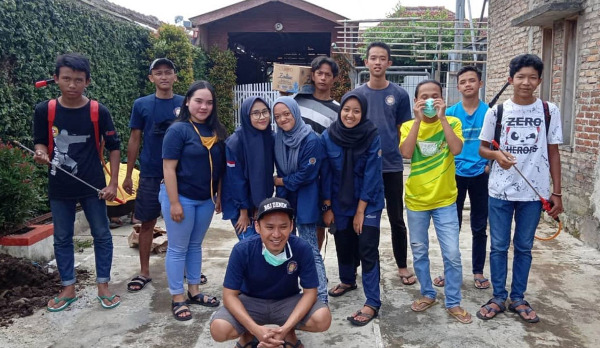

Penyemprotan Disinfektan — Pencegahan COVID-19
Deskripsi Kegiatan
Maret 2020. Kata "lockdown" baru saja masuk ke kosakata sehari-hari kita. Berita tentang virus yang merenggut nyawa berdatangan dari seluruh penjuru dunia, dan ketakutan mulai menyelinap ke rumah-rumah di Desa Cikalong. Di tengah kepanikan dan ketidakpastian itulah SABANUSA memilih untuk tidak diam — memilih untuk bergerak, untuk hadir, untuk menjadi perisai pertama bagi warga yang mereka cintai.
Cerita Lengkap
Kabar tentang COVID-19 menyebar lebih cepat dari virusnya sendiri. Grup WhatsApp warga RW 03 penuh dengan berita — sebagian valid, sebagian hoaks, semuanya menciptakan campuran kebingungan dan kecemasan. Para lansia bertanya apa yang harus dilakukan. Ibu-ibu bertanya apakah aman membiarkan anak mereka keluar rumah. Dan di tengah semua pertanyaan itu, SABANUSA mengadakan rapat darurat.
Keputusan diambil cepat: kita lakukan penyemprotan disinfektan massal di seluruh RW 03. Bukan karena ada yang memerintahkan. Bukan karena ada anggaran khusus. Melainkan karena ini adalah hal yang benar untuk dilakukan, dan SABANUSA punya orang-orang muda yang mau dan mampu melakukannya. Dana dikumpulkan secara swadaya dari anggota dan donatur warga dalam waktu kurang dari 24 jam. Alat semprot knapsack dipinjam dan disumbangkan oleh beberapa warga yang bersimpati. Cairan disinfektan dipesan dan tiba keesokan harinya.
🦠 Operasi Penyemprotan 25 Maret 2020
- 25 anggota SABANUSA turun langsung ke lapangan
- 150+ rumah warga RW 03 disemprot dari pintu ke pintu
- Masjid, mushola, dan tempat ibadah lainnya diprioritaskan
- Fasilitas umum: pos ronda, warung, dan jalan-jalan utama
- Protokol: masker, sarung tangan, dan jaga jarak ketat
- Waktu operasi: pukul 07.00 pagi hingga 16.00 sore
Pagi hari tanggal 25 Maret 2020, 25 anggota SABANUSA berkumpul dengan perlengkapan lengkap — masker, sarung tangan, baju lengan panjang, dan semangat yang tidak kalah tebalnya. Sebelum berangkat, ketua tim memberikan pengarahan singkat tentang cara penggunaan alat semprot yang benar dan area-area yang harus diprioritaskan. Tidak ada yang gentar. Tidak ada yang bertanya, "Apakah ini aman untuk kita?" Semua sudah siap menerima risiko demi melindungi orang lain.
Tim dibagi menjadi beberapa regu yang masing-masing bertanggung jawab atas blok jalan tertentu. Mereka bergerak dengan sistematis — mulai dari ujung RW 03, menyemprot setiap pagar, tangga, gagang pintu, dan area yang sering disentuh banyak orang. Di beberapa rumah, warga membuka pintu dan mengucapkan terima kasih sambil menangis. Ada yang menyodorkan minuman dan makanan kecil sebagai ungkapan rasa syukur. Ada pula yang hanya berdiri di balik jendela, menatap dengan mata berkaca-kaca.
Masjid dan mushola menjadi prioritas utama. Di saat itu, banyak perdebatan tentang apakah masjid harus ditutup atau tidak. Sambil menunggu kejelasan kebijakan, SABANUSA memastikan bahwa setidaknya tempat ibadah itu bersih dan terjaga semaksimal mungkin — sebagai bentuk tanggung jawab kepada jamaah yang masih beribadah di sana.
Ketika matahari mulai condong ke barat dan operasi resmi selesai, para anggota SABANUSA berkumpul kembali dengan tubuh yang lelah namun hati yang lega. 150 lebih rumah telah disemprot. Seluruh fasilitas umum telah ditangani. Mereka telah melakukan apa yang mereka bisa, dengan apa yang mereka punya, di saat yang paling dibutuhkan.
Pandemi akhirnya berlalu, tapi kenangan 25 Maret 2020 itu tidak. Bagi anggota SABANUSA yang ikut turun hari itu, peristiwa tersebut menjadi definisi nyata dari apa artinya menjadi bagian dari sebuah komunitas: bukan hanya hadir di saat senang, tapi tetap berdiri di saat paling gelap sekalipun. Itulah SABANUSA — pemuda yang tidak menunggu aman untuk berbuat baik.